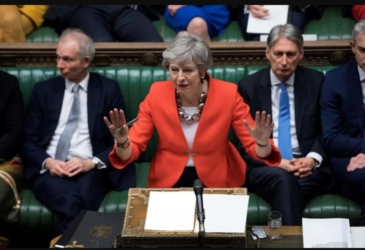

It is the 24th of July, and the House of Commons is filled up to its brim. As the clock approaches 12 noon, there is a sudden roar from the Tory backbenches, people applaud as Theresa May makes her way to sit in the front bench, right behind the despatch box. She is wearing her signature blue navy dress coat, ready to pass the baton on to yet another Prime Minister, and she bows out in style, grace and passion. MPs are no longer cold. They cheer and applaud her on as she leaves the House to go to Buckingham Palace but Jeremy Corbyn (the then Leader of the Opposition) sums up the opposition’s mood simply by saying, “I’m glad the Government Party’s in such good heart today Mr. Speaker for tomorrow they won’t be!”, his words being a premonition to the rise of buffoonery under the garb of war-speak and nationalism, all of that while ‘British Trump’ (the clue being in the hair) was readying himself to accept Her Majesty the Queen’s request to form a new government.

The contrast between Boris Johnson and Theresa May serves perhaps as the perfect backstop to establish what the true nature of politics actually is in a world like today. While one’s speeches in the House truly command the listener’s ears, the other can’t even finish a proper sentence, yet the latter won an election by a landslide while the former lost a majority when it came to standing in an election.
The choice of the British people to leave the European Union by a mere 2% margin played a big role in pushing Britain into the ‘biggest peacetime threat to the Union since World War II’. When one talks of Brexit, it is imperative to mention that a simple article can never summarise the innumerable geo-political and socio-economic impacts of the breakout, however, it would be inherently wrong to talk about Brexit without mentioning the biggest issue arising from it – Northern Ireland’s border.
The United Kingdom is a Union of four States: England, Scotland, Wales and Northern Ireland, and towards the east, it borders the Republic of Ireland - a completely different state. Ireland in itself was once a sovereign state, but by the Government of Ireland Act, 1921, the British government partitioned Ireland into two halves, one to keep with themselves and the other under Home Rule. However, from its inception, the people of Ireland have never agreed to a hard border between the brother nations, and the UK, as a liberal democracy had maintained the same for about 96 years. Come 2016 and Ireland is grappling with this bone of contention again.
Southern Ireland has always been an integral part of the EU economy and when talks of Britain leaving the EU surfaced, it was clear to all that the moment Britain leaves the European Union, Northern Ireland would leave too, as a result of which the institution of a ‘trade border’ between Northern Ireland and Southern Ireland would come into place. The people however could never accept that.
It is at this point that Theresa May became the Prime Minister – after receiving Cameron’s baton in 2016. Cameron had left May with a powerful majority but her abrupt decision to call a surprise general election in 2017 left her position in tatters, when in fact she was forced to form a coalition with the Irish Party DUP in order to establish a ‘working majority’ in Parliament.
With a majority in Parliament and the seal of approval of the people, May went on to the negotiating table at Brussels; it took her a year to agree on a deal with the EU leaders. When she finally returned with a 500 page document, the horrors of Parliament awaited her. Solving the crisis at Ireland was not an easy job, but using her political prowess, May established the Irish Backstop. The backstop would have required keeping Northern Ireland in some aspects of the EU Single Market, until an alternative arrangement was agreed between the EU and the UK. The proposal also provided for the UK as a whole to have a common customs territory with the EU until a solution were delivered to avoid the need for customs controls within the UK (between Northern Ireland and Great Britain). The 'backstop' element was that the arrangement would have continued to apply potentially indefinitely unless the UK and the EU were both to agree on a different arrangement, for example on a trade agreement between UK and EU at the end of the transition period. It did not make sense to many people: Hard line Brexiteers could not agree to a partial Brexit as this while others could not accept the “indefinite” part of the clause.
The Result?
She had to experience fire in the Parliament. Her Party members kept backstabbing her, while Labour used the platform of the House to shamelessly advocate their beliefs. In the end, when May prepared to put the Deal to the Vote of the House, she suffered a catastrophic defeat-the biggest blow to any sitting Premier since World War II. Following this defeat, she lost two more meaningful votes with her colleagues, having decimated and battered her Premiership, showing her the way out.
Enter Boris Johnson.
With his yellow hair, upper class accent, and prolonged inability to speak at length, the Tories seemed to be beguiled by his motto to ‘Get Brexit Done’, and ironically, he did. But in spite of his nationalist and unrestrained rhetoric, one must necessarily ask what he did right that May didn’t. If someone were to look at the Withdrawal Agreement, it was the exact same, a mere 5% of the total text was changed. Was it the backstop? Yes he changed the backstop, but as Jonathan Powell, Tony Blair’s chief negotiator in the Good Friday agreement, tweeted: “The funny side of the No. 10 claim they have got rid of the backstop is that they have in fact transformed it from a fallback into the definitive future arrangement for NI with the province remaining in the single market and customs union”.
So if the deal remained the same, if the opposition remained the same, what changed?
The Prime Minister did. The fundamental difference in the persona of Theresa May and Boris Johnson is in the fact that she is a Statesman, while he is a bully, and it seems as if modern politics prefers the latter type. If one were to look at May in Parliament, or even with her own party, she did almost everything with a subtle elegance and grace. There was perhaps a feminine touch- there was power nevertheless, but she never forgot her position. But Johnson on the other hand played it on the ditch itself. No sooner did he assume office than he tried to sack 21 Tory MPs including the grandson of Winston Churchill, tried to shut down Parliament and bring about a No Deal Brexit, caused his own brother’s resignation, and faced daily calls to apologize for his racist and insensitive remarks. He juggled all of this while asking his fellow MPs to either vote for his deal or resign. No matter how afraid the Conservatives were of his scourge, or how many calls for resignation he faced while in office- when History remembers these Prime Ministers, there will be a failure and a successful person.
There is reason behind this. Politics has always been considered a means to getting the city to working more efficaciously, trying to take steps towards the mutual good, but in today’s world of cowardice, self sufficiency and betrayal, Politics has reduced to a fight with the pigs in the ditch (as Churchill said in his famous quote). In any government, the opposition has to take on the government even if it agrees with their policies (Why? The votes, obviously.), the government must keep jeering and bullying people to keep supporting their stance (Why? The votes, obviously), or else they lose the power. Such is their thirst for power that neither side would ever agree with one another, and the only way to get things done is primarily by pointing a gun at their face. Theresa May never had the capacity to hold an MP by his hand as he would walk through the corridors of Westminster, and coerce him into voting for her, she never could descend to that level, but that coercive, strong-words-and-no-action populist gained ground because his force, his ground level interactions made them feel important, gave fuel to their egos which Theresa May was unable to. Now it is up to you the reader to decide as to whether, the System which is sympathetic to megalomaniac giants needs to be reformed, or if May was really a failure, and needed to amp up with the new times and fight fire with fire itself